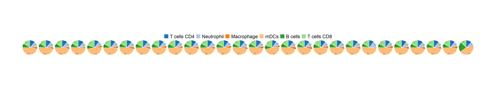
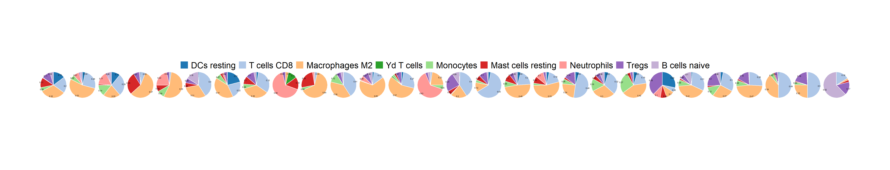

Chapter 3 🌱 Tumor Microenviroment Analysis
3.1 Availiable TME Analysis Method in tigeR
10 open source tumor microenvironment deconvolution methods are indlcued in tigeR.
3.2 Derive the Proportions of Different TME Cell Types
You can use the function deconv_TME() to derive the proportions of different tumor microenvironment cell types from gene expression data with these tools.
devtools::install_github('dviraran/xCell')
devtools::install_github("GfellerLab/EPIC")
devtools::install_github("cansysbio/ConsensusTME")
devtools::install_github("federicomarini/quantiseqr")3.3 Visualization and Comparing the Cell Proportions
cell1 <- c("T cells CD4","Neutrophil", "Macrophage","mDCs","B cells", "T cells CD8")
pie1 <- fraction_pie(cell_name_filter(frac1),feature=factor(cell1, levels = cell1))
cell2 <- c("DCs resting", "T cells CD8", "T cells CD4 naive", "Macrophages M2", "Yd T cells", "Monocytes","Mast cells resting", "Neutrophils", "Tregs","B cells naive")
pie2 <- fraction_pie(cell_name_filter(frac2[[1]][1:22,]),feature=factor(cell2, levels = cell2))
pie1
pie2
3.4 Searching for Key Cell Types Associated with Immunotherapy Response
## TIMER
TM <- deconv_TME(MEL_GSE91061,method = "TIMER")## Found 125 genes with uniform expression within a single batch (all zeros); these will not be adjusted for batch.TM_SE <- SummarizedExperiment(assays=SimpleList(TM),
colData=colData(MEL_GSE91061))
browse_biomk(SE=TM_SE)
📝 More Details About TME Analysis
TIMER is a comprehensive tool for systematical analysis of immune infiltrates across diverse cancer types.
CIBERSORT is an analytical tool from the Alizadeh Lab and Newman Lab to impute gene expression profiles and provide an estimation of the abundances of member cell types in a mixed cell population, using gene expression data.
MCPCounter is called the Microenvironment Cell Populations-counter. It allows the robust quantification of the absolute abundance of eight immune and two stromal cell populations in heterogeneous tissues from transcriptomic data
xCell is a gene signature-based method learned from thousands of pure cell types from various sources. xCell applies a novel technique for reducing associations between closely related cell types.
IPS uses an analytical strategy to provide comprehensive view of 28 TIL subpopulations including effector and memory T cells and immunosuppressive cells (Tregs, MDSCs).
EPIC is called Estimating the Proportion of Immune and Cancer cells. It compares the level of expression of genes in a tumor with a library of the gene expression profiles from specific cell types that can be found in tumors and uses this information to predict how many of each type of cell are present.
ESTIMATE is described as ‘Estimation of STromal and Immune cells in MAlignant Tumours using Expression data’. It is a method that utilizes gene expression signatures to infer the proportion of stromal and immune cells within tumor samples.
ABIS is called ABsolute Immune Signal (ABIS) deconvolution. ABIS performs absolute deconvolution on RNA-Seq and microarray data.
ConsensusTME uses a consensus approch to generate cancer-specific signatres for TME cell types, and utilizes ssGSEA framework to estimate the relative abundance of these cell types.
quanTIseq is a computational pipeline for the quantification of the Tumor Immune contexture from human RNA-seq data.